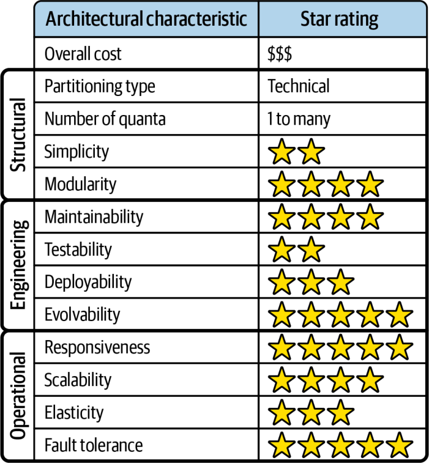

بخش عمدهٔ حاکمیتِ مربوط به EDA غیرساختاری (nonstructural) است و به مشاهدهپذیری در قالب لاگها، بهعنوان بخشی از یک شبکهٔ کلیِ حاکمیت (governance mesh)، نیاز دارد. بسته به زیرساخت و محیط، شاید لازم باشد برخی معیارهای حاکمیتیِ مربوط به EDA بهصورت دستی گردآوری شوند.
دو حوزهٔ اصلیِ حاکمیت در این سبک عبارتاند از کوپلینگ ایستا از راه مدیریت قرارداد، و کوپلینگ پویا از راه فراخوانیهای همگام. هر دوی این جنبهها در EDA فرسایش ساختاری به شمار میآیند، پس مهم است که آنها را زیر نظر داشته باشیم.
از منظر کوپلینگ ایستا، معماران میتوانند حاکمیت را بر مواردی مانند نرخ تغییر (rate of change) قراردادهای محمولهٔ رویداد و کوپلینگ مُهریِ کلی برقرار کنند. تغییر قراردادها در EDA، به دلیل ماهیت جدا از همِ آن، ممکن است بسیار پرریسک باشد. تغییر یک قرارداد رویداد، بهویژه قراردادی که طرحوارهای (schema) به آن وابسته نیست، میتواند یک پردازندهٔ رویدادِ پاییندستی را از کار بیندازد. این ریسک بهویژه در EDA جدی است، زیرا آزمودنِ جریانهای رویدادِ سرتاسریِ غیرقطعی بسیار دشوار است.
کوپلینگ مُهری (بخش «محمولهٔ رویداد» در صفحهٔ ۲۴۰ را ببینید) را میتوان با ثبت و مشاهدهٔ پیوستهٔ این امر حاکمیت کرد که کدام فیلدهای یک قرارداد رویداد را پردازندههای رویدادی که به آن رویداد پاسخ میدهند به کار نمیبرند. مشاهدهٔ این فیلدهای استفادهنشده میتواند به کوچککردنِ اندازهٔ قرارداد، کاهش پهنای باند و مدیریت کوپلینگ مُهری و تغییرات غیرضروریِ ناشی از آن در پردازندههای رویداد کمک کند.
از منظر کوپلینگ پویا، معماران میتوانند توابع برازش خودکاری بنویسند تا ارتباط همگام میان پردازندههای رویداد را از راه لاگها و دیگر ابزارهای مشاهدهپذیر (مانند حاشیهنویسیهای کد منبع یا بهکارگیریِ کتابخانههای استانداردِ شناسهٔ سفارشی برای ارتباط همگام) مشاهده و ردگیری کنند. هر ارتباط همگامی در یک معماری رویدادمحور باید ردگیری و دربارهٔ آن گفتوگو شود تا اطمینان حاصل شود که واقعاً لازم است، بهویژه اگر از توپولوژی پایگاهدادهٔ حوزهای یا اختصاصی استفاده شود.
EDA، به دلیل مصنوعات (artifacts) فراوانی که هر حوزه را میسازند، تا حد زیادی معماریای افرازشدهٔ فنی به شمار میآید: چندین پردازندهٔ رویداد، کانال رویداد، کارگزار پیام و، بسته به توپولوژی پایگاهداده، احتمالاً چندین پایگاهداده. با این حال، وقتی تیمها درون حوزهها سازمان یافته باشند (مانند تیمهای چندتخصصی با تخصصهای ویژه)، این سبک میتواند بهخوبی کار کند. با این همه، برخی انواعِ مشخصِ توپولوژی تیم (بخش «توپولوژیهای تیم و معماری» در صفحهٔ ۱۵۱ را ببینید) ممکن است EDA را چالشبرانگیز بیابند.
در ادامه چند ملاحظه دربارهٔ همراستاییِ این توپولوژیهای تیمِ مشخص با EDA آمده است:
تیمهای همراستا با جریان: بسته به اندازهٔ سیستم، تیمهای همراستا با جریان ممکن است به دلیل ماهیت جدا از همِ پردازندههای رویداد، در پیادهسازیِ تغییرات حوزهمحور با دشواری روبهرو شوند. از آنجا که حوزهها و زیرحوزهها در EDA معمولاً با چندین پردازندهٔ رویداد و رویداد مشتق پیادهسازی میشوند، درک همهٔ این اجزای متحرک ممکن است برای تیمهای همراستا با جریان چالشبرانگیز باشد. برای نمونه، افزودنِ یک گام به گردشکار ثبت سفارش ممکن است مستلزم تغییر چندین پردازندهٔ رویداد و نیز بازسازیِ چگونگی (و زمانِ) برانگیختهشدنِ رویدادهای مشتقِ موجود باشد. هرچه معماری رویدادمحور بزرگتر و پیچیدهتر باشد، تیمهای همراستا با جریان کماثرتر خواهند بود.
تیمهای توانمندساز: به دلیل یکپارچگیِ لازم میان پردازندههای رویداد بر پایهٔ رویدادهای مشتق و قراردادهایشان، تیمهای توانمندساز در معماریهای رویدادمحور خوب کار نمیکنند. آزمایشگری و بهینهسازیهایی که تیمهای توانمندساز درون یک جریان انجام میدهند میتواند درک و مدیریتِ تیم همراستا با جریان را از جریان کلیِ رویداد مختل کند و معمولاً به هماهنگیِ بیش از اندازه میان تیمهای همراستا با جریان و تیمهای توانمندساز نیاز دارد.
تیمهای زیرسیستم پیچیده: تیمهای زیرسیستم پیچیده، به دلیل ماهیت جدا از هم و ناهمگامِ EDA، با آن بهخوبی کار میکنند. پردازشهای پیچیده را میتوان بهآسانی در پردازندههای رویدادِ جداگانه منزوی کرد تا تیم زیرسیستم پیچیده بر آنها تمرکز کند و پردازشهای کمپیچیدگیتر را به تیمهای همراستا با جریان بسپارد. از آنجا که پردازندههای رویداد از نظر پویا بهشدت از هم جدا هستند، تیمهای همراستا با جریان تنها برای قراردادهای ایستای محمولهٔ رویداد و رویدادهای مشتق باید با تیمهای زیرسیستم پیچیده هماهنگ شوند.
تیمهای پلتفرم: در EDA، عمدتاً به دلیل افرازِ فنیِ آن، توسعهدهندگان میتوانند با بهکارگیریِ ابزارها، سرویسها، APIها و وظایف مشترک از مزایای توپولوژی تیم پلتفرم بهره ببرند. این امر بهویژه زمانی صادق است که تیمها بخشهای زیرساختیِ EDA (مانند کارگزاران پیام، هابهای رویداد، گذرگاههای رویداد و دیگر مصنوعاتِ کانال رویداد) را مرتبط با پلتفرم در نظر بگیرند.
در جدول رتبهبندیِ ویژگیها در شکل ۱۵-۳۹، رتبهٔ یکستاره یعنی آن ویژگی معماریِ مشخص در این معماری بهخوبی پشتیبانی نمیشود، در حالی که رتبهٔ پنجستاره یعنی آن ویژگی یکی از قویترین جنبههای این سبک است. تعریفِ هر یک از ویژگیهایی که در این کارنامه آمدهاند در فصل ۴ یافت میشود.
معماری رویدادمحور عمدتاً معماریای افرازشدهٔ فنی است، به این معنا که هر حوزهٔ مشخص در میان چندین پردازندهٔ رویداد پخش شده و از راه کارگزاران، قراردادها (محمولهٔ رویداد) و موضوعها به هم پیوند خورده است. تغییر در یک حوزهٔ مشخص معمولاً بر چندین پردازندهٔ رویداد و دیگر مصنوعاتِ پیامرسانی اثر میگذارد، از این رو EDA معمولاً افرازشدهٔ حوزهای به شمار نمیآید.

تعداد کوانتومها در EDA، بسته به تعاملات پایگاهدادهایِ درون هر پردازندهٔ رویداد و اینکه سیستم از پردازش درخواست-پاسخ استفاده میکند یا نه، میتواند از یک تا چندین کوانتوم متغیر باشد. هرچند ارتباط در EDA به فراخوانیهای ناهمگام متکی است، اگر چندین پردازندهٔ رویداد یک نمونهٔ پایگاهدادهٔ واحد را به اشتراک بگذارند، همهٔ آنها درون یک کوانتوم معماریِ واحد جای میگیرند. همین امر دربارهٔ پردازش درخواست-پاسخ نیز صادق است: هرچند ارتباط میان پردازندههای رویداد همچنان ناهمگام است، اگر پاسخی فوری از مصرفکنندهٔ رویداد لازم باشد، آن پردازندههای رویداد بهصورت همگام به هم گره میخورند و یک کوانتوم واحد را شکل میدهند.
برای نمونه، فرض کنید یک پردازندهٔ رویداد برای ثبت سفارش درخواستی به پردازندهٔ رویدادِ دیگری میفرستد. پردازندهٔ رویداد نخست برای ادامهٔ کار باید منتظر شناسهٔ سفارش از پردازندهٔ رویدادِ دیگر بماند. اگر پردازندهٔ رویداد دوم (همانی که سفارش را ثبت میکند و شناسهٔ سفارش را تولید میکند) از کار افتاده باشد، پردازندهٔ رویداد نخست نمیتواند ادامه دهد. این یعنی آن دو بخشی از یک کوانتوم معماریِ واحدند و ویژگیهای معماریِ یکسانی دارند، هرچند هر دو پیامهای ناهمگام میفرستند و دریافت میکنند.
معماری رویدادمحور در کارایی، مقیاسپذیری و تحمل خطا، که نقاط قوت اصلی آناند، رتبهٔ بسیار بالایی (چهار تا پنج ستاره) میگیرد. کارایی بالای آن از ترکیب ارتباطات ناهمگام با پردازشِ بهشدت موازی به دست میآید. مقیاسپذیری بالا از راه توازنبارِ برنامهای (programmatic load balancing) پردازندههای رویداد محقق میشود (که مصرفکنندگان رقیب (competing consumers) و گروههای مصرفکننده (consumer groups) نیز نامیده میشود). با افزایش بار درخواستها، میتوان پردازندههای رویدادِ بیشتری را بهصورت برنامهای افزود تا درخواستهای اضافی را رسیدگی کنند. دلیل اینکه به آن تنها چهار ستاره (و نه پنج ستاره) دادیم، پایگاهداده است (برای نمونهای از رتبهٔ پنجستاره در این ویژگیها، فصل ۱۶ دربارهٔ معماریهای مبتنی بر فضا را ببینید). EDA تحمل خطا را از راه پردازندههای رویدادِ جدا از هم و ناهمگامِ خود به دست میآورد که سازگاری نهایی و پردازشِ گردشکارهای رویداد را فراهم میکنند. اگر پردازندههای پاییندستیِ دیگر در دسترس نباشند، تا زمانی که رابط کاربری یا پردازندهای که درخواستی میفرستد به پاسخ فوری نیاز نداشته باشد، سیستم میتواند رویداد را در زمانی دیگر پردازش کند.
EDA در سادگی و آزمونپذیریِ کلی رتبهٔ نسبتاً پایینی میگیرد که بیشتر به دلیل جریانهای رویدادِ غیرقطعی و پویای آن است. در مدلهای درخواستمحور، آزمودنِ جریانهای قطعی نسبتاً آسان است، زیرا مسیرها و پیامدهایشان معمولاً شناختهشدهاند. در مدل رویدادمحور چنین نیست. گاهی معماران بهسادگی نمیدانند پردازندههای رویداد چگونه به رویدادهای پویا واکنش نشان خواهند داد یا چه پیامهایی ممکن است تولید کنند. اینها گردشکارهای غیرقطعی نامیده میشوند. «نمودارهای درخت رویداد» (event tree diagrams) در این سیستمها ممکن است بینهایت پیچیده باشند و صدها یا حتی هزاران سناریو پدید آورند و همین امر حاکمیت و آزمون آنها را بسیار دشوار میکند.
سرانجام، EDAها بهشدت تکاملپذیرند و از همین رو رتبهٔ پنجستاره میگیرند. افزودنِ قابلیتهای تازه از راه پردازندههای رویدادِ موجود یا تازه نسبتاً سرراست است. با فراهمکردنِ قلابها از راه رویدادهای مشتقِ برانگیختهشده، رویداد و دادههای متناظرش از پیش برای پردازشهای دیگر در دسترساند، پس برای افزودنِ آن کارکرد تازه به هیچ تغییری در زیرساخت یا پردازندههای رویدادِ موجود نیازی نیست.
از عیبهای EDA، دشواریِ کنترل گردشکار کلیِ مربوط به یک رویداد آغازگر است. پردازش رویداد به دلیل شرایطِ دگرگونشونده بسیار پویاست و دشوار است بدانیم تراکنش کسبوکاری (business transaction) که بر پایهٔ رویداد آغازگر شکل گرفته چه زمانی به پایان رسیده است.
مدیریت خطا نیز در EDA چالشی بزرگ است. از آنجا که معمولاً هیچ میانجیای تراکنش کسبوکار را پایش یا کنترل نمیکند (بهجز در توپولوژی میانجی)، اگر خرابیای رخ دهد، سرویسهای دیگر از آن از کار افتادن بیخبر خواهند ماند. فرایند کسبوکاری که بر پایهٔ آن رویداد آغازگر شکل گرفته گیر میکند و بدون نوعی مداخلهٔ خودکار یا دستی نمیتواند پیش برود، حتی در حالی که همهٔ فرایندهای دیگر بیاعتنا به خطا به راه خود ادامه میدهند. برای نمونه، اگر پردازندهٔ رویداد Payment در سیستم سفارشدهیِ ما از کار بیفتد و وظیفهٔ محولهاش را کامل نکند، پردازندهٔ رویداد Inventory همچنان موجودی را تعدیل میکند و همهٔ پردازندههای رویدادِ بعدی چنان واکنش نشان میدهند که گویی همهچیز رو به راه است.
راهاندازی دوبارهٔ یک تراکنش کسبوکار (بازیابیپذیری) در EDA بسیار دشوار است. از آنجا که در جریان پردازش رویداد آغازگر اقدامات دیگری بهصورت ناهمگام انجام شدهاند، بسیاری اوقات ارسال دوبارهٔ رویداد آغازگر بهسادگی امکانپذیر نیست.
| واژهٔ انگلیسی | معادل مصوب/بهکاررفته در این بخش |
|---|---|
| Nonstructural (governance) | غیرساختاری |
| Governance Mesh | شبکهٔ حاکمیت |
| Rate of Change | نرخ تغییر |
| Schema | طرحواره |
| Artifact (architecture) | مصنوع |
| Programmatic Load Balancing | توازنبارِ برنامهای |
| Competing Consumers | مصرفکنندگان رقیب |
| Consumer Group | گروه مصرفکننده |
| Event Tree Diagram | نمودار درخت رویداد |
| Business Transaction | تراکنش کسبوکار |
| Stamp Coupling | کوپلینگ مُهری |
| Stream-Aligned Team | تیم همراستا با جریان |
| Scorecard | کارنامه |